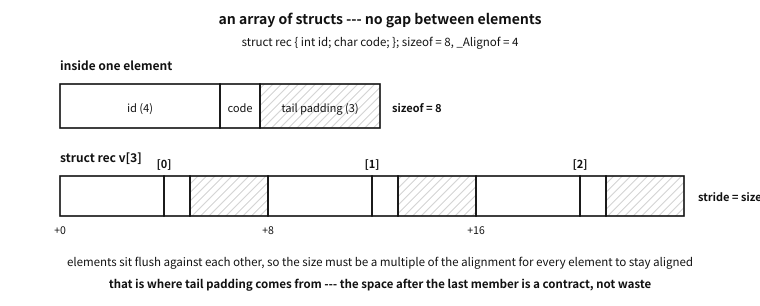
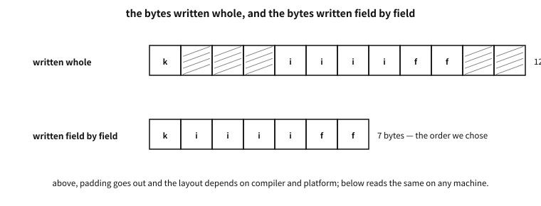

48 Using structs — temporary values, named arguments, layout
What to know first
Looking back
Chapter 47 said a struct is a value, so assigning copies it whole and passing it to a function sends a copy. But chapter 39 said that passing an array to a function makes it decay into a pointer so that the original is touched. Do the two not collide — which is it when a struct contains an array?
A. The struct wins. An array decaying into a pointer is the rule for when the array itself is written as an argument; an array that has gone in as a struct member is part of the value that is the struct and is therefore copied. So the only way in C to pass an array truly like a value is “wrapping it in a struct.” This chapter’s second example shows that contrast by measurement — the side passed by value leaves the original untouched, and the side that decayed into a pointer changes it.
The need for this chapter, and its context
By the end of this chapter
The questions this chapter answers
- Where do you break a long chain like
s.frame->size.ywhen reading it? - Are there no traps in this idiom?
- Does “the value is not determined” apply to tail padding too?
- Would a text format not solve it from the start?
- So when handling a file format or a communication protocol, is a packed struct the right answer?
48.1 Nesting and access — reading dots and arrows mixed
A struct’s member may itself be a struct. The notation is simply layered.
struct point { int x, y; };
struct rect { struct point origin; struct point size; };
struct scene { struct rect *frame; const char *name; };
struct rect r = { .origin = { .x = 1, .y = 2 }, .size = { .x = 30, .y = 40 } };
struct scene s = { .frame = &r, .name = "main" };
r.origin.x /* value inside value : dot + dot */
s.frame->size.y /* pointer inside value : dot + arrow + dot */
(&r)->origin.y /* the arrow is only an abbreviation of (*p). */There is only one rule. If the left is a value, a dot; if a pointer, an arrow. p->x is an abbreviation of (*p).x (chapter 47), and the abbreviation exists because handling structs through pointers is overwhelmingly common. Indeed, code written as (*p).x is usually old code or a place explaining operator precedence.
Q. Where do you break a long chain like s.frame->size.y when reading it?
A. Left to right, one step down at a time. s (the scene) → .frame (the pointer inside it) → ->size (the size of the rectangle pointed at) → .y (that point’s y). Each arrow is a mark that one dereference happens, so it also means there are as many pointers needing a null check as there are arrows. If s.frame is null this notation collapses on the spot — a long chain, as easy as it is to read, also hides the checks.
48.2 The temporary struct — the compound literal
The notation for making one struct value on the spot, without making a named variable, is the compound literal (C99).
draw_((struct draw_opts){ .width = 40, .title = "chart" }); /* straight as an argument */
return (struct point){ .x = a.x + dx, .y = a.y + dy }; /* as a return value */Take away three properties.
First, it is an lvalue. It merely has no name; it is a real object, so its address can be taken and its members assigned to. The example’s &(struct draw_opts){ … } is the check. It is easy to think “being a temporary (an rvalue) its address cannot be taken”, but C’s compound literal is not like that — a difference from C++‘s temporary objects.
Second, its lifetime is the end of the block, not of the statement. A compound literal written inside a block lives until that block ends (automatic storage duration). So within the same block it is safe to carry its address about.
Third, therefore, sending its address out of the function is a dangling pointer.
Counter-example. Returning the address of a compound literal
struct point *make(int x, int y)
{
return &(struct point){ .x = x, .y = y }; /* it vanishes when the function ends */
}Exactly the same accident as returning the address of a local variable in chapter 38. To return a value, return it by value (struct point make(...)), fill a place the caller provided, or use dynamic allocation (chapter 46). A compound literal written at file scope has static storage duration and does not have this problem, but in that place it is usually better to give it a name.
48.3 Named arguments — passing one struct
examples-en/ch47/opts.c
/* Making "named parameters" out of a temporary struct (a compound literal),
and confirming that copying a struct carries an array member along too. */
#include <stdio.h>
/* ── (1) parameters passed by name ───────────────────────── */
struct draw_opts {
int width; /* 0 means the default, 80 */
int height; /* 0 means the default, 24 */
bool grid;
const char *title;
};
static void draw_(struct draw_opts o)
{
int w = o.width ? o.width : 80;
int h = o.height ? o.height : 24;
printf(" %3dx%-3d grid=%-5s title=%s\n", w, h,
o.grid ? "true" : "false", o.title ? o.title : "(none)");
}
/* wrapped so the caller need not write the braces */
#define draw(...) draw_((struct draw_opts){ __VA_ARGS__ })
/* ── (2) passing an array by value ───────────────────────── */
struct row { int cell[8]; }; /* wrap an array in a struct and it becomes a value */
static int total(struct row r) /* the whole copy comes across */
{
int t = 0;
for (int i = 0; i < 8; i++) t += r.cell[i];
r.cell[0] = 999; /* only the copy changes */
return t;
}
static int total_raw(int cell[8]) /* an array parameter decays to a pointer */
{
int t = 0;
for (int i = 0; i < 8; i++) t += cell[i];
cell[0] = 999; /* the original changes */
return t;
}
int main(void)
{
puts("passing by name (order does not matter, and any may be left out)");
draw(.title = "chart", .height = 20, .width = 40);
draw(.grid = true);
draw(); /* everything default */
/* a compound literal has an address, and its lifetime runs to the end of this block */
struct draw_opts *p = &(struct draw_opts){ .width = 5, .title = "temporary" };
printf(" reached through the temporary's address: width=%d title=%s\n", p->width, p->title);
puts("\nan array by value / by pointer");
struct row r = { .cell = { 1, 2, 3, 4, 5, 6, 7, 8 } };
/* the call and the reading of the original are written apart on purpose -
mix them in one expression and there is no order between them */
int t1 = total(r);
printf(" by value : sum %2d, after the call cell[0] = %d\n", t1, r.cell[0]);
int t2 = total_raw(r.cell);
printf(" by pointer: sum %2d, after the call cell[0] = %d\n", t2, r.cell[0]);
/* struct assignment is a whole copy too — array members included */
struct row copy = r;
copy.cell[1] = -1;
printf(" after changing the copy: original cell[1] = %d, copy cell[1] = %d\n",
r.cell[1], copy.cell[1]);
return 0;
}
Output
passing by name (order does not matter, and any may be left out)
40x20 grid=false title=chart
80x24 grid=true title=(none)
80x24 grid=false title=(none)
reached through the temporary's address: width=5 title=temporary
an array by value / by pointer
by value : sum 36, after the call cell[0] = 1
by pointer: sum 36, after the call cell[0] = 999
after changing the copy: original cell[1] = 2, copy cell[1] = -1
From here comes the idiom that changes code most in practice. Consider a function with five or six arguments.
draw(40, 20, false, true, 3, "chart"); /* what is the third true? */C has neither other languages’ named arguments nor default values. But overlay designated initialisers with a compound literal and you effectively get the same thing.
struct draw_opts { int width; int height; bool grid; const char *title; };
static void draw_(struct draw_opts o);
#define draw(...) draw_((struct draw_opts){ __VA_ARGS__ })
draw(.title = "chart", .height = 20, .width = 40); /* order-free */
draw(.grid = true); /* the rest are defaults */
draw(); /* all defaults */Four things are gained.
- Freedom from order. A designated initialiser fixes the slot by name, so the caller writes in whatever order suits.
- What is left out is 0. The standard’s promise that unwritten members are filled with 0 (null for pointers) becomes the “default value”. So the knack is to design the fields so that 0 makes sense as the default — the example reading
width == 0as “the default 80” is that. - The call site is self-explanatory. You need not ask what the
false, true, 3above are. - Adding a field later does not break existing calls. Change an argument list and every call site must be fixed, but adding one member to a struct has no effect on existing calls at all (that member becomes 0). In an API maintained for a long time this property is especially valuable.
Q. Are there no traps in this idiom?
A. Beware of three.
First, the order of evaluation between initialiser items is not fixed. Mix in side effects, as in draw(.width = i++, .height = i), and the result is unpredictable (chapter 21). Write only values in the arguments.
Second, if there is a field for which 0 is a valid value, “left out” cannot be told from “0 was specified”. Design such a field with its meaning inverted (grid rather than no_grid), or add a separate presence field.
Third, the cost of building and passing a large struct every time. Option structs are usually small enough not to matter, but when they grow, use the variant of receiving const struct opts * and passing &(struct opts){ … } at the call site — the property above, that an address can be taken, works here.
In practice. Named arguments as met in practice
struct sigaction, chapter 80, or struct timespec), and the ..._desc structs of graphics libraries (the ..._DESC of several GPU APIs, say) are all the same idea. “When arguments grow numerous, bind them into a struct” is practically an idiom in C, and C99′s designated initialisers made it read well.48.4 Padding — the empty space between members
examples-en/ch47/layout.c
/* The layout of a struct - padding, reordering, forced alignment */
#include <stddef.h>
#include <stdio.h>
struct loose { char a; int b; char c; }; /* something big between small ones */
struct tight { int b; char a; char c; }; /* the big one laid down first */
#pragma pack(push, 1) /* no padding from here on */
struct packed { char a; int b; char c; };
#pragma pack(pop) /* back to the ordinary rules */
struct cacheline { alignas(64) int counter; }; /* forced to a wide alignment */
struct nested { struct loose inner; int tag; };
static void report(const char *name, size_t size, size_t align,
size_t oa, size_t ob, size_t oc)
{
printf("%-8s size %2zu align %2zu offsets a=%zu b=%zu c=%zu\n",
name, size, align, oa, ob, oc);
}
int main(void)
{
report("loose", sizeof(struct loose), alignof(struct loose),
offsetof(struct loose, a), offsetof(struct loose, b), offsetof(struct loose, c));
report("tight", sizeof(struct tight), alignof(struct tight),
offsetof(struct tight, a), offsetof(struct tight, b), offsetof(struct tight, c));
report("packed", sizeof(struct packed), alignof(struct packed),
offsetof(struct packed, a), offsetof(struct packed, b), offsetof(struct packed, c));
printf("\ncacheline size %zu align %zu\n",
sizeof(struct cacheline), alignof(struct cacheline));
printf("nested size %zu inner offset %zu tag offset %zu\n",
sizeof(struct nested), offsetof(struct nested, inner),
offsetof(struct nested, tag));
/* the difference between the sum of the three members and the struct = the padding bytes */
size_t members = sizeof(char) + sizeof(int) + sizeof(char);
printf("\nloose: members sum %zu, actual %zu -> padding %zu bytes\n",
members, sizeof(struct loose), sizeof(struct loose) - members);
return 0;
}
Output
loose size 12 align 4 offsets a=0 b=4 c=8
tight size 8 align 4 offsets a=4 b=0 c=5
packed size 6 align 1 offsets a=0 b=1 c=5
cacheline size 64 align 64
nested size 16 inner offset 0 tag offset 12
loose: members sum 6, actual 12 -> padding 6 bytes
Chapter 47 gave the three rules of padding — each member at a multiple of its own alignment, the struct’s alignment the maximum of its members’, the size rounded up to that. This chapter’s example confirms them again: char, int and char sum to six while the struct is twelve bytes, and tight, with the big one first, is eight.
48.4.1 Why tail padding exists — the answer is “an array of structs”
Padding between members is easy to see: the next member has to be pushed to its aligned place. But why is there space after the last member, with nobody behind it?
The answer shows up not when the struct stands alone but when it becomes an array.

Figure 48.1 — An array of structs — since no gap is allowed between elements, the size is rounded up to a multiple of the alignment.
Recall what chapter 39 nailed down — an array has no gap between its elements. So in an array of struct rec { int id; char code; } the second element must begin right after the first, at byte 5. But id must sit at a multiple of 4, and 5 is not one.
There is exactly one way to satisfy both — round the struct’s own size up to a multiple of its alignment. That makes the size 8, and the spare 3 bytes land after the last member. That is tail padding, and it is why the stride of an array is precisely sizeof.
| Demand | Where it comes from |
|---|---|
| an element must sit at a multiple of its alignment | the member alignment rule — which applies to every element of the array |
| no gap between elements | the definition of an array (chapter 39) — “contiguously allocated” |
therefore sizeof must be a multiple of the alignment | that is the only way to satisfy both at once |
Table 48.1 — The two demands that create tail padding
★ A rule of thumb follows — shaving a byte off one struct is usually wasted effort, but in an array of a million it is a million bytes. That is exactly where laying members out largest-first (the listing’s tight) earns its keep.
Q. Does “the value is not determined” apply to tail padding too?
A. It does. Between members or at the tail, padding is padding, and the three prohibitions in the misconception box below apply just the same. Compare, hash or write out sizeof bytes wholesale and whatever is in there travels with them.
One thing to add — this is why a flexible array member is sized with offsetof rather than sizeof (chapter 47). sizeof includes this tail padding, so appending data after it would count those bytes twice.
From here we go to the next question — what does the existence of padding forbid in practice.
A common misconception. “Padding bytes contain 0”
They do not. The value of padding is unspecified. Initialisation may put 0 there, or whatever previously used that place may remain. Three practical traps come from this.
- Do not compare structs with
memcmp(chapter 70) — equal values may come out “different” because the padding differs. Compare member by member. - Do not hash a struct whole — for the same reason, the same value gives different hashes.
- Do not send a struct as it is to a file or a network — the rubbish in the padding goes with it (and can be an information leak), and if the receiving side’s layout differs the interpretation goes wrong too.
Whether struct assignment (b = a;) copies the padding as well is not promised by the standard either. Remember that only the members are meaningful and it is all explained.
48.4.2 Arrays of structs and pointers to them — the working patterns
Having seen tail padding, here is the rest of handling several structs. In practice a struct almost always travels as an array or through a pointer.
examples-en/ch47/struct_array.c
/* Arrays of structs and pointers to them - stride, tail padding, two ways to walk. */
#include <stdalign.h>
#include <stddef.h>
#include <stdio.h>
#include <string.h>
struct rec {
int id; /* 4 bytes, at a multiple of 4 */
char code; /* 1 byte */
/* <- 3 bytes of tail padding go here */
};
/* Taking an array of structs - it decays to a pointer, so the count comes too */
static int sum_ids(const struct rec *v, size_t n)
{
int sum = 0;
for (size_t i = 0; i < n; i++)
sum += v[i].id; /* v[i] is *(v + i) --- the stride is sizeof(struct rec) */
return sum;
}
/* To change one element, take a pointer (by value only the copy changes) */
static void bump(struct rec *r) { r->id += 100; }
static void bump_by_value(struct rec r) { r.id += 100; }
int main(void)
{
struct rec v[3] = { { 1, 'a' }, { 2, 'b' }, { 3, 'c' } };
printf("[one element]\n");
printf(" sizeof(struct rec) = %zu, alignof = %zu\n",
sizeof(struct rec), alignof(struct rec));
printf(" offsetof id = %zu, code = %zu -> tail padding = %zu bytes\n",
offsetof(struct rec, id), offsetof(struct rec, code),
sizeof(struct rec) - (offsetof(struct rec, code) + sizeof(char)));
printf("\n[the array: the stride is exactly sizeof]\n");
printf(" sizeof v = %zu (= %zu x %zu)\n",
sizeof v, sizeof v / sizeof v[0], sizeof v[0]);
for (size_t i = 0; i < 3; i++)
printf(" &v[%zu] = %p offset +%td\n", i, (const void *)&v[i],
(const char *)&v[i] - (const char *)&v[0]);
printf(" no gap: (char *)&v[1] - (char *)&v[0] == sizeof v[0] -> %s\n",
((const char *)&v[1] - (const char *)&v[0]) == (ptrdiff_t)sizeof v[0]
? "true" : "false");
printf("\n[two ways to walk it]\n");
int by_index = 0;
for (size_t i = 0; i < 3; i++)
by_index += v[i].id;
int by_pointer = 0;
for (const struct rec *p = v; p != v + 3; p++) /* one past the end is legal */
by_pointer += p->id;
printf(" by index = %d, by pointer = %d, via function = %d\n",
by_index, by_pointer, sum_ids(v, 3));
printf("\n[changing one element]\n");
bump_by_value(v[0]);
printf(" after bump_by_value : v[0].id = %d (unchanged - it got a copy)\n", v[0].id);
bump(&v[0]);
printf(" after bump(&v[0]) : v[0].id = %d\n", v[0].id);
printf("\n[why the tail padding matters at scale]\n");
printf(" a million records: %zu bytes, of which padding is %zu\n",
sizeof(struct rec) * 1000000u,
(sizeof(struct rec) - (offsetof(struct rec, code) + 1)) * 1000000u);
return 0;
}
Output
[one element]
sizeof(struct rec) = 8, alignof = 4
offsetof id = 0, code = 4 -> tail padding = 3 bytes
[the array: the stride is exactly sizeof]
sizeof v = 24 (= 3 x 8)
&v[0] = 0x7fff25c46ba0 offset +0
&v[1] = 0x7fff25c46ba8 offset +8
&v[2] = 0x7fff25c46bb0 offset +16
no gap: (char *)&v[1] - (char *)&v[0] == sizeof v[0] -> true
[two ways to walk it]
by index = 6, by pointer = 6, via function = 6
[changing one element]
after bump_by_value : v[0].id = 1 (unchanged - it got a copy)
after bump(&v[0]) : v[0].id = 101
[why the tail padding matters at scale]
a million records: 8000000 bytes, of which padding is 3000000
Four things to read off it.
- The stride is
sizeof— the listing’s addresses are +0, +8, +16. With no gap between elements (chapter 39),(char *)&v[1] - (char *)&v[0]is exactlysizeof v[0]. - A function taking the array takes the count too — decay loses the number of cells (chapter 41).
sum_ids(const struct rec *v, size_t n)is the standard shape. - To change one, take a pointer —
bump_by_valueedits a copy and nothing happens; onlybump(&v[0])changes the original. chapter 34′s copy rule holds for structs as well. - There are two ways to walk, and they agree — by index
v[i], or by pointerfor (p = v; p != v + 3; p++). Thatv + 3(one past the end) is legal in the latter is chapter 39′s contract.
| How it is passed | What it costs | Where it fits |
|---|---|---|
by value, struct rec r | a copy of the whole struct | when it is small (a couple of pointers) and will not be changed. The original is safe |
by pointer, struct rec *r | one address | when it must be changed, or it is large, or there are many |
by const pointer, const struct rec *r | one address | ★ the shape worth defaulting to — cheap, and the promise not to change it is written in the type |
Table 48.2 — Three ways to pass a struct, and what each is worth
★ That last row is the working default. “If you only read it, take a const pointer” writes the cost and the intent at once, and it is why this book’s listings take that shape.
48.5 Why a struct must not be stored or sent whole
There is a line that looks like the shortest possible.
fwrite(&record, sizeof record, 1, f); /* the whole struct into a file */
send(sock, &record, sizeof record, 0); /* the whole struct onto a socket */One line does it — and this is one of the lines that causes the most accidents in this book. There are four reasons, and they are independent of each other.
| What is wrong | The result |
|---|---|
| The value of the padding is not specified | Rubbish you never wrote goes out with it — sometimes an information leak |
| The layout differs per compiler, option and platform | Two programs built from the same source exchange different bytes |
| Byte order (endianness) differs | 0x01020304 becomes 0x04030201 at the other end (chapter 49) |
| Type sizes differ | long, size_t, pointers and enums differ between 32- and 64-bit |
Table 48.3 — What goes wrong when a struct is written out whole
examples-en/ch47/serialize.c
/* What goes out when a struct is written whole — and how to serialise properly. */
#include <stdint.h>
#include <stdio.h>
#include <string.h>
struct record {
uint8_t kind; /* 1 byte */
uint32_t id; /* 4 bytes — must sit at a multiple of four */
uint16_t flags; /* 2 bytes */
};
static void dump(const char *label, const unsigned char *b, size_t n)
{
printf(" %-16s", label);
for (size_t i = 0; i < n; i++) printf(" %02X", b[i]);
printf(" (%zu bytes)\n", n);
}
/* ── The right way: you decide the byte order ──────────────────────
Write fixed-width types one at a time in a fixed order (big endian here).
No padding can creep in, and any machine reads the same meaning. */
static size_t put_u8(unsigned char *p, uint8_t v) { p[0] = v; return 1; }
static size_t put_u16(unsigned char *p, uint16_t v)
{ p[0] = (unsigned char)(v >> 8); p[1] = (unsigned char)v; return 2; }
static size_t put_u32(unsigned char *p, uint32_t v)
{
p[0] = (unsigned char)(v >> 24); p[1] = (unsigned char)(v >> 16);
p[2] = (unsigned char)(v >> 8); p[3] = (unsigned char)v;
return 4;
}
static size_t encode(unsigned char *out, const struct record *r)
{
size_t n = 0;
n += put_u8(out + n, r->kind);
n += put_u32(out + n, r->id);
n += put_u16(out + n, r->flags);
return n;
}
static int decode(const unsigned char *in, size_t len, struct record *r)
{
if (len < 7) return 0; /* validate the length first */
r->kind = in[0];
r->id = (uint32_t)in[1] << 24 | (uint32_t)in[2] << 16
| (uint32_t)in[3] << 8 | (uint32_t)in[4];
r->flags = (uint16_t)((uint16_t)in[5] << 8 | in[6]);
return 1;
}
int main(void)
{
printf("struct record: sizeof = %zu (members sum to %zu)\n\n",
sizeof(struct record),
sizeof(uint8_t) + sizeof(uint32_t) + sizeof(uint16_t));
/* Imitate a place that still holds whatever was there before —
a struct on the stack really does land on somebody else's leftovers. */
struct record r;
memset(&r, 0xAA, sizeof r); /* dirty the place, then */
r.kind = 1; r.id = 0x01020304; r.flags = 0x0506; /* fill only the members */
puts("[written whole]");
dump("bytes", (const unsigned char *)&r, sizeof r);
puts(" -> where AA shows is padding: never given a value, and out it goes.");
puts(" (imitated here, but real uninitialised values leak the same way)");
puts("\n[serialised field by field]");
unsigned char buf[16];
size_t n = encode(buf, &r);
dump("bytes", buf, n);
puts(" -> no padding, and the order is the one we chose (big endian).");
struct record back;
if (decode(buf, n, &back))
printf(" read back: kind=%u id=0x%08X flags=0x%04X — %s\n",
back.kind, back.id, back.flags,
(back.kind == r.kind && back.id == r.id && back.flags == r.flags)
? "same as the original" : "different");
puts("\n[why comparing whole structs is dangerous]");
struct record a, b;
memset(&a, 0x00, sizeof a);
memset(&b, 0xFF, sizeof b); /* only the padding differs */
a.kind = b.kind = 1; a.id = b.id = 42; a.flags = b.flags = 7;
printf(" every member is equal. memcmp = %d <- non-zero means \"different\"\n",
memcmp(&a, &b, sizeof a) != 0 ? 1 : 0);
puts(" So compare structs member by member.");
return 0;
}
Output
struct record: sizeof = 12 (members sum to 7)
[written whole]
bytes 01 AA AA AA 04 03 02 01 06 05 AA AA (12 bytes)
-> where AA shows is padding: never given a value, and out it goes.
(imitated here, but real uninitialised values leak the same way)
[serialised field by field]
bytes 01 01 02 03 04 05 06 (7 bytes)
-> no padding, and the order is the one we chose (big endian).
read back: kind=1 id=0x01020304 flags=0x0506 — same as the original
[why comparing whole structs is dangerous]
every member is equal. memcmp = 1 <- non-zero means "different"
So compare structs member by member.
The first part of the demonstration shows the first reason with your own eyes. The place the struct will occupy is dirtied with 0xAA and only the members are filled in; printing the whole thing shows AA still sitting between them — because the members were touched and the padding was not.

Figure 48.2 — Above, twelve bytes with the padding going out; below, seven bytes in the order we chose.
48.5.1 So how is it done — field by field
There is one prescription. Decide the byte order yourself and write fixed-width types one at a time.
The demonstration’s encode is that shape. Four knacks belong to it.
- Use fixed-width types —
uint8_t,uint16_t,uint32_t(chapters 27–28). The size of anintor alongdepends on the platform. - Write the byte order into the code. The demonstration writes big endian (network byte order). Written with shifts and masks, the same bytes come out regardless of the endianness of the machine running it.
- Write the length first. Strings and arrays go as “length then bytes”; the reader has to know how much to read.
- The reading side validates. The demonstration’s
decodelooks at the length first — not touching short input is the first line of defence.
What this buys is plain. The byte count drops from twelve to seven (no padding), any machine reads the same values, and the format is written in the code where it can be read later.
In practice. Padding that leaked — an old headache in kernels
An operating system kernel often hands structs to user programs (the results of system calls, socket information, and so on). If the kernel fills only the members and copies the whole thing, whatever was left in the padding — a fragment of kernel memory — crosses over with it.
This is the class of vulnerability called a kernel information leak, and fixes of exactly this kind appeared in Linux and the BSDs over many years. The amount leaked is a few bytes, but if an address is among them it is a thread that unravels address randomisation (ASLR (address space layout randomisation)).
So kernel code acquired a discipline — a struct that will cross to user space is first zeroed whole (memset). Put in this book’s terms: the representation layer is settled explicitly. Chapter 47′s { 0 } initialiser does the same job more safely.
The lesson carries straight into applications — where a struct goes out, you must know byte by byte what goes out.
Counter-example. Storing a struct in a file as it stands
struct config c = { .port = 8080, .timeout = 30 };
fwrite(&c, sizeof c, 1, f); /* save */
...
fread(&c, sizeof c, 1, f); /* read in the next version */Three things go wrong. Rebuild the program with another compiler and the layout changes, so old files cannot be read. Read a file written on 32-bit from 64-bit and the sizes disagree. And the moment one member is added to the struct, every old file becomes unreadable.
The last hurts most — there is no room to evolve the format. Field-by-field serialisation answers it: write a version number first, and let the reader branch on it.
Q. Would a text format not solve it from the start?
A. In many cases that is the right answer. Text formats such as JSON (JavaScript Object Notation), INI and CSV have no endianness, no padding and no type-size problem, and a person can read and fix them by eye. That is also why chapter 95 writes a small JSON reader three ways.
Where a binary format is needed is clear — when the volume is large (text costs several times as much), when speed matters (parsing cost), or when the format is already fixed (a protocol, a file format). Even then the rule is the same: settle the byte layout yourself and write it down.
One more road, in passing: rather than designing a binary format, use one that exists — Protocol Buffers, CBOR, FlatBuffers. This book only names them. Whichever you choose, avoid “write it whole”.
48.6 How to remove padding, how to force alignment
There are certainly places where padding is inconvenient — when the byte layout is fixed from outside, as in a file format or a communication protocol. So implementations provide devices for turning padding off.
Platform note. packed and pragma pack — not standard
#pragma pack(push, 1) /* widely used, common to MSVC, GCC and Clang */
struct header { char kind; int length; };
#pragma pack(pop) /* always put it back */
struct header2 { char kind; int length; } __attribute__((packed)); /* GCC and Clang */Neither is standard C. In the example #pragma pack(1) made a struct of 6 bytes with alignment 1. Fail to pair push with pop and the layout of structs in headers included afterwards changes too, giving the nasty bug of a layout that disagrees with a library — leaving pack open inside a header without closing it is the representative accident.
Counter-example. Passing the address of a packed struct’s member
struct __attribute__((packed)) h { char k; int len; };
void take(int *p);
take(&s.len); /* an unaligned address — outside the contract */A packed struct’s member may sit at a misaligned place. Pass its address as an ordinary int * and the receiving side accesses it assuming alignment — on a tolerant machine (x86) merely slower, on a strict machine dead on the spot (chapter 4). GCC and Clang issue the warning -Waddress-of-packed-member here.
Reading the value (int n = s.len;) is safe, because the compiler gathers the bytes for you. It is leaking the address that is the problem.
There is a tool in the opposite direction, forcing alignment, and this one is a standard word of C23 (chapter 87).
struct cacheline { alignas(64) int counter; }; /* on a 64-byte boundary */In the example this struct became size 64, alignment 64. Its uses are clear — putting each thread’s counter on a different cache line to avoid the false sharing seen in chapter 13, or meeting a hardware requirement such as DMA (direct memory access) or SIMD (single instruction, multiple data). It is not free, though: the struct above uses 64 bytes to hold one int.
Q. So when handling a file format or a communication protocol, is a packed struct the right answer?
A. There is a safer right answer: moving between the byte sequence and the struct by hand.
/* reading: take the fields out of the buffer one at a time */
uint32_t len;
memcpy(&len, buf + 1, sizeof len);
len = le32toh(len); /* state the endianness too (chapter 3) */Laying a packed struct over a buffer (struct h *p = (struct h *)buf;) assumes three things at once — no padding, correct alignment, matching endianness. Get one of them wrong and it breaks silently, and besides, access through a swapped type runs into the aliasing rules (chapter 54). Field-by-field memcpy is longer but exposes all three assumptions in the code. What Part XII’s library does is exactly to gather this tedious work into one place.
48.6.1 alignas — the fifth family, the alignment specifier
The alignas just used is a word this book now introduces properly. Chapter 27 split what may appear in a declaration’s front slot into five families; this is the last of them — the alignment specifier. The family holds exactly one word, alignas.
| Form | Meaning | Example |
|---|---|---|
alignas(constant) | align to that byte boundary — must be a power of two | alignas(64) int c; |
alignas(type) | align as that type demands — the same as alignas(alignof(T)) | alignas(double) char c; |
Table 48.4 — Anonymous members — shapes and meaning
Its partner alignof is not a specifier but an operator. Like sizeof it asks a type and returns its alignment requirement as a constant. C11 spelled them _Alignas and _Alignof, with <stdalign.h> laying lowercase macros on top; from C23 alignas and alignof are keywords themselves, usable without the header (chapter 87).
★ One rule matters. Alignment can only be raised, never lowered. Ask for 1 where the type demands 8 and the compiler refuses.
alignas(1) double d; -> error: '_Alignas' specifiers cannot reduce alignment of 'd'Rightly so. Alignment is not a preference but a contract fixed by the hardware and the ABI (application binary interface) (chapters 4 and 38); lower it and the program dies on the spot or quietly slows down.
There are three places it cannot go, and the compiler catches all three.
| Forbidden place | What the compiler says |
|---|---|
| a function parameter | alignment specified for parameter 'x' |
a typedef | alignment specified for typedef 'T' |
| a bit-field | alignment specified for bit-field 'x' |
Table 48.5 — Where an anonymous member is forbidden
★ That it cannot go on a typedef is especially telling. It means alignment is a property of the declaration, not of the type — in exact contrast with a qualifier like const, which is part of a type and so typedef const int ci; works (chapter 27). To make some type always carry a large alignment you must not use the specifier but wrap it in a struct — the struct cacheline earlier in this section is that method.
48.7 Members without names, and container_of
Two small devices to collect. Both turn up often in real code, and both are hard to see the point of from the syntax alone.
examples-en/ch47/container_of.c
/* Anonymous members and container_of — from a member's address back to the struct. */
#include <stddef.h>
#include <stdio.h>
/* The link of an intrusive list. Meaningless alone — it is embedded in others. */
struct link { struct link *next; };
/* C11's anonymous members: reach an unnamed struct's or union's members directly */
struct tagged {
unsigned kind;
union { /* <- no name */
int i;
double d;
};
};
struct task {
const char *name;
int priority;
struct link node; /* the link it hangs from */
};
/* The member's address minus that member's offset is the struct's address.
The Linux kernel's container_of is this one line. */
#define CONTAINER_OF(ptr, type, member) \
((type *)(void *)((char *)(ptr) - offsetof(type, member)))
int main(void)
{
puts("[anonymous members]");
struct tagged t = { .kind = 1, .i = 42 };
printf(" t.kind = %u, t.i = %d <- written t.i, not t.u.i\n",
t.kind, t.i);
printf(" sizeof(struct tagged) = %zu\n", sizeof t);
puts("\n[container_of]");
struct task a = { .name = "compile", .priority = 3 };
struct task b = { .name = "link", .priority = 1 };
a.node.next = &b.node;
b.node.next = nullptr;
/* the list knows only links; recover the task from the link */
printf(" offsetof(struct task, node) = %zu\n", offsetof(struct task, node));
struct task *expect[] = { &a, &b };
size_t i = 0;
for (struct link *p = &a.node; p; p = p->next, i++) {
struct task *task = CONTAINER_OF(p, struct task, node);
printf(" recovered from the link: \"%s\" (priority %d) — same address? %s\n",
task->name, task->priority, task == expect[i] ? "yes" : "no");
}
puts("\n The link knows nothing of the data, so one list works for any struct");
puts(" — Part XII's intrusive list stands on this one line.");
return 0;
}
Output
[anonymous members]
t.kind = 1, t.i = 42 <- written t.i, not t.u.i
sizeof(struct tagged) = 16
[container_of]
offsetof(struct task, node) = 16
recovered from the link: "compile" (priority 3) — same address? yes
recovered from the link: "link" (priority 1) — same address? yes
The link knows nothing of the data, so one list works for any struct
— Part XII's intrusive list stands on this one line.
48.7.1 Anonymous structs and unions (C11)
A struct may contain an unnamed struct or union, and then its members are used directly from outside.
struct tagged {
unsigned kind;
union { int i; double d; }; /* no name */
};
struct tagged t = { .kind = 1, .i = 42 };
t.i = 43; /* not t.u.i */A tagged union (chapter 49) reads better for it — the u in t.u.i never meant anything. The price is that an unnamed union cannot be passed on its own.
48.7.2 container_of — from a member back to the whole
Since offsetof says where a member begins, the arithmetic runs the other way too.
#define CONTAINER_OF(ptr, type, member) \
((type *)(void *)((char *)(ptr) - offsetof(type, member)))Subtract the member’s offset from the member’s address and you have the struct’s address. The Linux kernel’s container_of is this one line, and intrusive data structures come from it — a list’s link does not know which struct it is embedded in, yet the struct can be recovered from the link.
The demonstration shows it. One struct link lets any struct hang from a list, and the list code need not know the type of the data. Part XII’s intrusive list stands on this.
Platform note. What this macro is standing on
container_of is widely used but not a form the standard guarantees. The arithmetic of casting to char * and subtracting has to be understood by the compiler as happening “inside that struct object”, and once provenance (chapter 38) is taken into account a grey area remains.
In practice every major compiler supports the pattern — kernels do not run without it. But the member really must belong to that struct. Pass the wrong type and a wrong address comes out with no check at all. That is why versions that check the type with C11′s _Generic or GCC’s typeof are common.
48.8 Passing an array by value — can it be done, and should it?
The latter part of the example is that contrast. total(struct row r) received a copy and changed it, and the original was untouched (cell[0] = 1). total_raw(int cell[8]) decayed into a pointer and changed the original (cell[0] = 999). The assignment struct row copy = r; likewise copies the array member whole.
So it comes to this. If you want to handle an array with value semantics in C, wrap it in a struct. It is the only way, and there are places where it is really used.
| where it is worthwhile | why |
|---|---|
small fixed-size vectors and matrices (struct vec3, struct mat4) | calculating with them like values is natural |
fixed-size identifiers and keys (struct uuid { unsigned char b[16]; }) | copying is cheap and leaves no room for mistakes |
| when an array must be returned | an array cannot be returned but a struct can |
| when you want to pass it immutably | being a copy, the callee cannot touch the original |
Table 48.6 — Where container_of earns its keep
The price is clear too.
Stack usage. The copy is usually placed in the called function’s stack frame. Pass a 16 KiB struct by value and that much more is piled on per call — measure it and the stack position before and after the call really does widen by the struct’s size. The stack is usually about 8 MiB (chapter 38), and can be far smaller in recursion or on a per-thread stack (chapter 83). Recursion passing large structs by value is the shortest road to stack overflow.
The cost of copying. But saying “a copy always happens” would be inaccurate. The calling convention decides — a small struct (usually up to two words) crosses in registers with nothing worth calling a copy, and for a large struct it is common for the caller to build it in memory and pass its address hidden. And if the function is inlined the compiler may remove the copy itself. So the accurate sentence is: the meaning is always a copy, and the real cost is decided by size, calling convention and optimisation.
A common misconception. “Passing a struct by value is always slow”
It depends on size. Something small like struct point { int x, y; } is if anything faster passed by value, and reads better too — pass a pointer and a dereference appears, and the compiler must suspect “someone may change the value through this pointer”, which reduces optimisation.
The rough practical rule: up to a couple of words by value, larger than that by const pointer. And this choice is a matter not only of performance but of contract — receive by value and “the original is not touched” is guaranteed by the syntax; receive by pointer and it is only promised with const.
Recap
| to remember | the point |
|---|---|
| access | dot if the left is a value, -> if a pointer (= (*p).) |
| compound literal | (struct T){…} — an lvalue whose lifetime is the block’s end |
| returning an address | do not send a compound literal’s address out of the function |
| named arguments | an options struct + designated initialisers. omitted members are 0 |
| designing defaults | fix the fields so that 0 makes sense as the default |
| padding | it arises from alignment. its value is unspecified |
| member order | lay the large ones first and the size shrinks |
memcmp, hashing, serialising | do not handle a struct whole |
pack | not standard. pair push/pop, do not leak member addresses |
alignas | standard. avoiding false sharing, hardware requirements |
| array by value | wrap it in a struct. watch the stack and the size together |
Table 48.7 — Using structs — what to remember
We have learned how to use structs. The next chapter is the device for seeing the same memory through a different eye — the world of unions and representation. The endianness demonstration booked in chapter 3 finally opens.